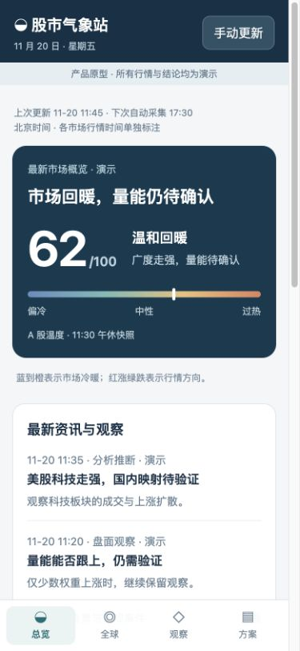
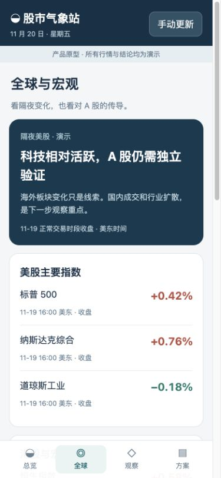
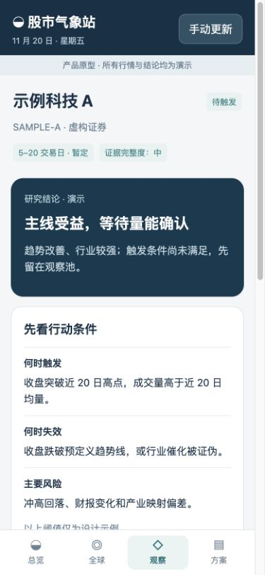
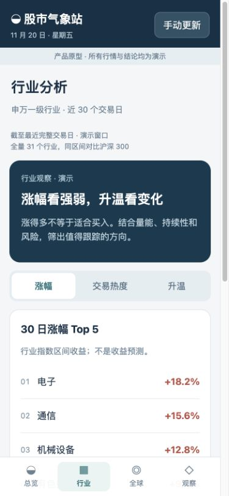
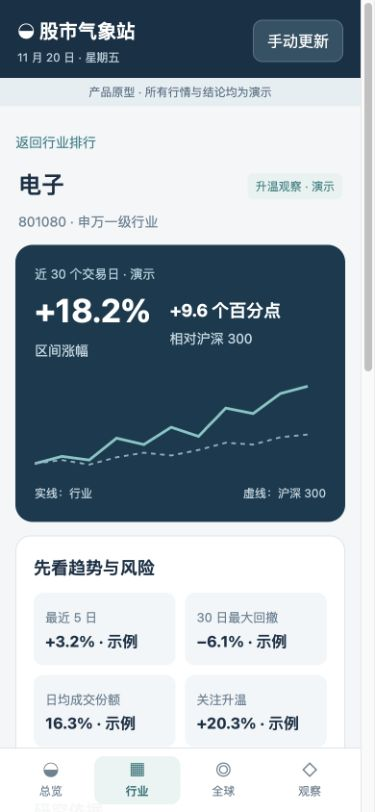
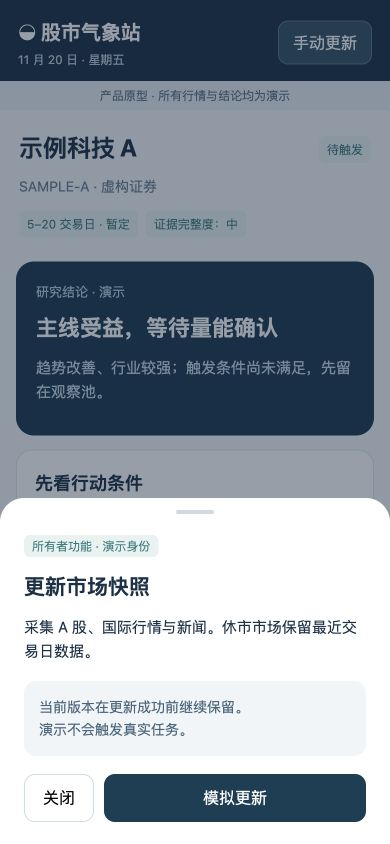

面向 tansitanding 的个人市场研究工作台。每日三次自动采集，前台统一呈现最新有效资讯，结合全球背景、A 股冷暖与个股证据，把“看见变化”转成“知道接下来验证什么”。
股市气象站是面向个人投资者的研究工作台：在 A 股盘前、午休、盘后，把宏观与国际市场、国内盘面、行业及个股观察串成一条可追溯的分析链。先回答“市场处于什么状态、为什么、接下来验证什么”，再展示候选标的。
| 调整项 | 本版设计 |
|---|---|
| 更新节奏 | 取消 14:30 固定更新；默认北京时间 08:45、11:45、17:30 三次。支持所有者手动发起新快照。 |
| 国际市场 | 新增美股三大指数、港股及关键宏观资产。各市场独立标明时间与状态。 |
| 仓库归属 | 计划新建 tansitanding/market-weather，不复用已有仓库；本轮先完成产品设计。 |
| 内容形态 | 采用最新资讯流 + 冷暖可视化 + 个股研究卡；避免新闻列表与行情数字堆砌。 |
主要用户为站点所有者，其他访客可阅读公开内容。首期以手机浏览为主，按 360–430 CSS 像素宽度设计；桌面使用居中的窄栏布局。核心信息和操作以单手浏览为基准。A 股是推荐主体；国际行情用于提供背景与传导线索。研究周期暂定 5–20 个交易日，用于定义观察与评估口径，后续可调整。
用户每次打开都进入同一个最新资讯首页，不需要判断应阅读哪一期。首屏回答当前市场状态，资讯区按事件发布时间倒序展示，重要事件可置顶并明确标注。盘前、午休、盘后仅是后台自动采集节点。
| 优先级 | 内容 | 完成定义 |
|---|---|---|
| P0 | 市场总览、国际与宏观、行业地图与 30 日行业分析、个股研究卡、最新资讯聚合页、手动更新、来源与时间、失败降级 | 从宏观读到个股，每个结论有证据、时间和状态；数据缺失不伪装为最新。 |
| P1 | 自选池、历史温度曲线、推荐效果统计、事件订阅 | 以已积累快照为基础，展示完整样本和基准。 |
| 后续探索 | 美股个股研究、夜间额外更新、更多市场、个性化规则 | 数据、预算和评估方法明确后扩展。 |
首期不包含交易下单、实时盯盘、个人持仓公开展示或收益承诺。个股候选可为空；不存在为了版面固定输出若干只股票的要求。
正式一级导航为“总览 / 行业 / 全球 / 观察”；后续增加“历史复盘”。手机首页统一显示最新有效内容，顺序为上次更新时间与下次自动采集时间、市场结论与温度、最新资讯、精简行情、板块和个股观察。不提供盘前、午间、盘后切换。首页温度进入首屏，完整行情与解释按需展开。点击事件查看事实、来源与传导逻辑；点击候选查看规则与证据。
主要路径：打开首页最新资讯 → 检查更新时间 → 读市场冷暖 → 看全球与宏观变化 → 验证行业强度 → 进入个股研究卡。站点所有者可从任一页打开手动更新底部弹层。
北京时间 08:45、11:45、17:30 为后台采集触发时间，分别位于 A 股盘前、午休和盘后。三个任务均采集当前可获得的行情与新闻，更新同一个最新内容入口；前台不分期、不按时段提供 Tab。
| 规则 | 产品行为 |
|---|---|
| 默认页面 | 进入首页展示最新成功发布的聚合版本；主导航只区分总览、全球和观察等内容。 |
| 资讯顺序 | 按有效发布时间倒序排列，同事件聚合去重；重要事件置顶须有标识。旧事件新报道保留事件时间与发布时间，不伪装为新发生。 |
| 更新后合并 | 追加新事件、更新已有事件的修订与分析；不清空仍有价值的早前资讯。首次默认展示最新若干条，更多按需加载。 |
| 行情与分析 | 每个市场保留自身最新有效行情时间；分析必须引用所用行情和事件版本，不能把尚未重算的旧结论标为新结论。 |
| 时间展示 | 首页显示上次成功发布时间、下次自动采集计划；新闻显示发布时间，行情显示观测时间。页面打开时间不代表资料已更新。 |
| 部分成功 | 发布带模块状态的统一新版本，明确标识沿用旧数据的模块与时间，相关分析暂停或标为待核验。 |
| 更新失败 | 继续展示上次有效版本与失败提示；不改变上次成功时间。迟到的旧任务不得覆盖已发布的新任务。 |
采集日历按 A 股交易日处理，休市日默认不启动三个自动任务；所有者可手动采集国际行情与新闻。国际行情按各自交易日历识别最近有效观测。计划时间是任务启动目标，不保证该时刻已发布；有限重试后保留错误摘要。
后台继续保存历次采集与发布快照，用于追溯、比较和后续验证，不作为前台的三个时段入口。每次发布校验版本一致性后原子切换。
站点所有者点击“手动更新”，确认范围后发起一次新采集。访客仅能“查看最新快照”，不持有采集权限。公共网页中不嵌入 GitHub Token、数据源密钥或可直接执行的匿名触发地址。
| 状态 | 界面反馈 | 处理规则 |
|---|---|---|
| 空闲 | 显示上次成功时间和手动更新按钮 | 所有者可发起；点击前展示更新范围。 |
| 已排队 / 运行中 | 显示排队、行情、新闻、分析、发布等阶段 | 复用正在执行的任务；重复点击不创建新任务，不展示虚假精确进度。 |
| 全部成功 | 提示新版本已发布，可查看本次变化 | 完成校验后原子切换；不把新旧快照无标记拼接。 |
| 部分完成 | 标明哪些模块成功、哪些沿用旧数据 | 保留模块时间与缺失原因，相关推荐暂停或标为待核验。 |
| 失败 / 超时 | 保留上次有效快照，提供错误摘要和重试入口 | 不将页面刷新时间冒充行情更新时间。 |
| 冷却中 | 显示剩余等待时间 | 建议成功或失败后 5 分钟冷却；后台执行并发锁与速率限制。 |
推荐上线方案：GitHub Pages 展示公开快照，加一个轻量且需身份验证的更新服务；服务验证所有者身份后触发 GitHub Actions，并返回任务标识供页面查询。备选孵化方案：按钮跳转 GitHub Actions，由 GitHub 登录与写权限控制，用户在 GitHub 内执行 Run workflow。备选多一步，但无需在首期接入认证后台；产品评审后确定采用哪条路径。原型展示推荐方案的交互。
| 模块 | 首期覆盖 | 展示要求 |
|---|---|---|
| 美股 | 标普 500、纳斯达克综合、道琼斯工业；行业事件摘要 | 正常交易时段收盘为默认，列出美东交易日、市场状态、北京时间换算。 |
| 港股 | 恒生指数、恒生科技 | 独立标明交易时间，不用 A 股午休状态套用港股。 |
| 宏观资产 | 美元指数、美国 10 年期国债收益率、黄金、原油 | 区分指数、现货、期货及合约；收益率使用 % 和 bp，单位随源数据记录。 |
| 事件 | 央行、经济数据、政策、重大公告及行业事件 | 事件发生时间、新闻发布时间、采集时间分别保留；预告不当作已发生。 |
国际市场状态包括交易中、收盘、休市、提前收盘、延迟、未知。时区用 Asia/Shanghai 与 America/New_York 等 IANA 标识计算，处理夏令时，避免固定加减 12 或 13 小时。第一版不新增美股夜间自动任务；A 股盘前集中吸收隔夜变化。
每条宏观解读拆为：事实 → 可能的传导路径 → A 股相关行业 → 需要观察的证据 → 反向情景。事实来自可访问来源；因果或产业映射明确标为分析推断。
在当前行业冷暖图基础上，新增独立的行业研究模块。默认使用最近 30 个交易日，覆盖行业涨幅、市场热度、驱动事件与推荐依据；不是简单推荐近期涨得最多的行业。正式界面标明窗口起止日期与数据截至时间。
首期统一采用申万 2021 一级行业，31 个行业，不混用不同分类体系。行业涨幅优先使用同源行业指数，以最新有效收盘价相对 30 个交易日前收盘价计算，包含 30 个交易日收益区间；对照沪深 300 的同区间表现。仅有成分股数据时，必须另行定义权重、复权与历史成分口径，不能把当前成分股涨幅简单平均当作历史行业指数。
30 日排行使用日终数据，午间沿用最近完整交易日的排名，并另外展示当日盘面变化及其时间；不把半日成交与全天成交混用，也不把盘中收益混进未注明口径的日终排名。
| 榜单 | 主要指标 | 展示目的 |
|---|---|---|
| 30 日涨幅 Top 5 | 区间收益、相对沪深 300 表现、近 5 日表现、区间最大回撤 | 识别已经走强的行业，同时识别近期回落与过热。 |
| 30 日交易热度 Top 5 | 成交额占比、近期相对自身基准的成交活跃度、上涨扩散度、去重事件关注度 | 识别交易与事件关注集中在哪里，热度不等于利好。 |
| 热度升温 Top 5 | 最近 5 日相对前 25 日的日均热度变化 | 识别近期新增关注，而非只展示长期热门行业。 |
成交活跃度比较应使用窗口之前的历史基准，所需数据量大于 30 个交易日。热度维度的归一化、权重、来源覆盖与缺失策略须在接入阶段明确并校准；首期采用明确的交易热度口径：30 日行业成交份额均值；升温为最近 5 日均值相对前 25 日变化。新闻热度与广度在可靠源接入前不合成。新闻转载按事件聚合，重大负面事件可能提高关注热度，必须单独标识事件方向。缺失事件数据时，不伪装为完整综合热度榜，可展示有明确标签的交易热度排行。
每个行业展示：30 日累计收益曲线及基准、近 5 日与近 30 日表现、成交与广度变化、宏观和国际传导线索、重要政策及公告、代表标的与风险。事实、规则结果和 AI 推断分开呈现，所有事件附来源和时间。
推荐池最多展示 3 个行业，允许为空，分为“持续强势”“升温观察”“过热警惕”。候选需综合相对强度、趋势持续性、上涨广度、成交与催化证据；风险警示与候选分开展示。不能仅凭涨幅 Top 或新闻数量直接得出买入结论。每张卡写明研究周期、入选理由、接下来验证什么、失效条件与反向证据。
行业详情可以下钻到相关个股研究卡；相关标的只是行业映射，不自动成为个股推荐。个股仍需通过自身的量价、风险和证据规则。
首页保留四块精简行业热力图，增加“查看 30 日行业分析”入口；正式主导航调整为“总览 / 行业 / 全球 / 观察”，评审原型中的“方案”入口移至设置。行业页用“涨幅 / 热度 / 升温”切换分析维度，页面始终读取最新有效数据，不按三个采集时间分期。行业排行和行业详情手机原型已补齐，正式页面的数据绑定将在第四阶段实现。
数据依赖包括统一行业分类、行业指数历史日线、成交数据、历史成分或有效广度样本、可映射行业的去重新闻。排名窗口、同源收益和基准可复算；样本不足不入榜；数据过期明确标识；热度与利好分离；行业推荐保存原始依据与规则版本，后续按相同研究周期与基准追踪效果。
首页主温度仅表示 A 股市场状态，不把不同市场合成一个含义模糊的“全球分数”。美股首期展示独立涨跌与趋势；国际变量作为背景证据。候选冷暖模型为研究假设，尚未校准，也不作为买入概率。
| 候选维度 | 权重草案 | 建议计算口径 |
|---|---|---|
| 市场广度 | 30% | 上涨家数占比、涨跌扩散；剔除停牌和无有效报价样本。 |
| 趋势强度 | 30% | 代表指数及有效样本相对均线的位置，使用截至快照的已知数据。 |
| 成交活跃度 | 25% | 与历史同一时段累计成交比较；午间不直接和全天成交比较。 |
| 风险与波动 | 15% | 波动扩张、极端下跌占比等；风险增加时降低温度。 |
各维度归一到 0–100 后加权，展示分项贡献与口径版本。历史分位须定义回溯窗口、最少样本及截断规则后才能正式启用；缺少任一核心维度时温度显示“暂不可计算”，不自动补成中性 50。盘前沿用上一交易日收盘温度，不能与午间盘中口径无提示直接比较。
分区草案：0–19 冰冷、20–39 偏冷、40–59 中性、60–79 偏暖、80–100 过热。冷暖用蓝→青→橙的连续色阶，涨跌用红涨绿跌，两套语义分离；同时显示文字和正负号，保证不依赖颜色辨读。行业热力图首期显示涨跌幅，明确与市场温度不是同一指标。
新闻优先采用可合法使用的官方公告、机构公开发布与授权资讯接口。记录来源、原文 URL、标题、发布时间、事件时间、采集时间、涉及市场和证券、事实摘要、分析推断以及去重事件 ID。全文转载不作为产品前提，公开展示范围以数据许可为准。
同一事件的转载归入事件簇，保留来源数量，不按转载次数直接放大热度。修订、辟谣和撤回追加到原事件；历史发布快照保留当时版本，最新视图显示修正。无法访问原文、发布时间缺失或来源互相矛盾时降低证据完整度；不能据此生成确定性的个股催化。
推荐结果采用“研究卡”：证券及市场标识、研究周期、首次纳入时间、当前状态、量价事实、行业背景、事件依据、触发条件、失效条件、风险和来源。状态流转为待观察 → 待触发 → 已触发 → 已失效 / 到期，人工修改需留下记录。
筛选先按规则完成，AI 不负责凭空挑选证券或计算指标。优先排除停牌、流动性不足和特殊风险样本；阈值和股票池由配置版本控制。IPO 样本不足、除权复权异常或公告缺失时显示待核验。没有满足条件的标的时展示“本期无新增候选”。
评估记录必须保留失败样本。信号产生后使用下一可执行时点的价格，考虑交易成本、停牌、涨跌停和交易制度；统计 5 / 10 / 20 个交易日收益、相对基准表现及最大不利波动。全量样本、同版本规则和可执行性条件一并展示；不使用后来才发布的信息回填原始信号。
| 依赖 | 首期需要 | 上线前检查 |
|---|---|---|
| A 股 | 交易日历、指数与全市场快照、行业映射、日线及复权、风险状态、公告 | 盘中快照可得性、覆盖率、公共展示授权、配额与延迟。 |
| 国际市场 | 指数、宏观资产、各市场交易日历及时区 | 符号映射、价格类型、币种、收益率单位和使用许可。 |
| 新闻 | 来源链接、发布时间、事件正文或可用摘要 | 授权范围、去重、修订和异常来源。 |
| 分析服务 | 有证据约束的摘要与解释 | 成本上限、超时、模型版本和输出校验。 |
源数据接入通过适配器隔离，产品不绑定某个免费接口。选择主备源前先验证真实样本和许可，不把尚未确认的接口写成已接通。LLM 失败时仍可发布行情与规则结果，将文字标为待生成；行情不足则暂停相应结论。
| 对象 | 核心字段 |
|---|---|
| 市场快照 | snapshot_id、时段、计划/开始/发布时间、模块状态、上一有效版本 |
| 行情观测 | 证券/指标、市场、价格类型、数值、单位、币种、交易日、行情时间、来源、延迟标记 |
| 事件 | event_id、事件/发布/采集时间、来源 URL、事实、推断、修订关联 |
| 研究卡 | 证券、规则版本、证据引用、状态、触发/失效条件、跟踪窗口 |
| 更新任务 | task_id、触发者、触发类型、阶段、结果、错误摘要、耗时 |
| 评估记录 | 原始信号、可执行价格、成本、基准、评估时点及收益/回撤 |
已发布快照不可静默覆盖；更正产生新版本并关联原始版本。前端只读取允许公开的汇总产物。自选、持仓、密钥、原始授权数据和任务内部日志不进入公开仓库或网页。
v0.4 根据主要通过手机访问的使用方式重排信息。首页首先回答“现在冷暖如何、今天看什么”，避免首屏被多张指数卡片占满。
| 设计项 | 手机方案 |
|---|---|
| 首屏 | 紧凑品牌栏与更新入口；上次更新时间、下次自动采集时间；温度与一句判断。重要结论直接可见。 |
| 导航 | 固定底部“总览 / 全球 / 观察 / 方案”；方案是评审原型入口，正式产品移到设置，不占主导航。顶部保留手动更新。 |
| 信息密度 | 默认两条重点、两项核心行情、四块行业热力图；完整指数、指标解释、证据与时间线按需展开。 |
| 国际行情 | 竖向列表，每行展示名称与变动，次行完整呈现交易日、时间和状态，避免横向表格。 |
| 个股研究 | 先看当前结论、触发、失效和风险；再展开证据。正文不压缩为过小字号。 |
| 更新 | 单手可操作的底部弹层，按钮至少 44 CSS 像素；后台运行时可关闭弹层继续阅读，重新打开查看同一任务。 |
| 安全区 | 底栏和底部弹层预留设备安全区；主内容增加底部留白，最后一张卡片不被遮挡。 |
| 首期性能 | 优先加载轻量简报快照，图表使用本地 CSS / SVG，无需重型图表库；未来验证移动网络下的首屏速度。 |
前台始终读取最新成功发布的聚合版本，不提供三个采集节点的切换。更新完成后统一刷新相关模块，保留当前阅读位置，并用“有新内容”提示避免突然打断浏览。错误和旧数据提示紧邻受影响模块。
本轮原型覆盖：底部导航、最新资讯阅读、折叠证据、手动更新的运行与完成状态。登录、真实后台任务、自动发布、浏览位置恢复和移动网络性能留到开发阶段验证。
以下为手机优先的 v0.4 高保真原型，全部数字、证券、事件和判断均为演示内容。可通过底部导航切换四模块；首页统一展示最新资讯；点击“手动更新”查看底部弹层流程；不会请求真实行情或执行 GitHub 任务。






拟新建仓库 tansitanding/market-weather，GitHub Pages 目标路径为 https://tansitanding.github.io/market-weather/；仓库已创建，目标网站尚未部署。此次交付聚焦手机优先的产品设计，不接入真实数据、不启动定时任务。
| 阶段 | 工作包 | 阶段出口 |
|---|---|---|
| 设计评审 | 确认最新资讯首页、后台采集时间、国际覆盖、研究周期与手动更新方案 | 冻结首期 PRD 与验收清单。 |
| 数据验证 | 验证 A 股与国际主备源、日历、新闻许可与成本 | 用真实快照验证时间、缺失处理与公开展示范围。 |
| MVP 开发 | 新仓库、四模块手机看板、采集/规则/摘要、手动更新、定时发布 | 三次采集与统一发布端到端可追溯，失败可恢复。 |
| 观察与校准 | 连续运行、推荐记录和指标校准 | 再决定扩展市场、规则和效果展示。 |
建议仓库结构：docs/ 保存产品文档与设计；web/ 保存界面；pipelines/ 保存采集与分析；config/ 保存规则与日历配置；tests/ 保存数据质量与核心计算检查；.github/workflows/ 保存自动化。发布公开快照与私有原始数据分开管理。
| 验收项 | 可验证结果 |
|---|---|
| 采集与展示分离 | 08:45 / 11:45 / 17:30 三个采集计划按北京时间执行；首页没有时段切换，始终显示最新有效聚合内容；A 股休市默认跳过定时采集。 |
| 国际时间 | 盘前看到正确的最近美股交易日；美股节假日、夏令时和提前收盘标识正确。 |
| 手动更新 | 未登录或无权限者无法触发；运行中重复点击复用同一任务；冷却由后台生效。 |
| 异常降级 | 某源失败时只显示上次有效数据和旧时间，不生成伪造更新；核心缺失则温度不可计算。 |
| 证据完整 | 每个新闻事实可追溯来源，推断有标签；每张研究卡含条件、失效规则和时间。 |
| 视觉与移动 | 红涨绿跌与冷暖色阶分离；360 / 390 / 430 CSS 像素宽度下主要页面无横向溢出；底部安全区不遮挡内容；触控目标不小于 44 × 44 CSS 像素；重要状态有文字说明。 |
| 版本与评估 | 快照、规则和原始推荐可追溯；未来数据不能修改历史信号；旧任务不能覆盖新发布版本。 |
开发基线：公开阅读无需登录；研究效果按 5 / 10 / 20 个交易日跟踪；国际市场先覆盖指数与宏观资产。前三阶段实施状态、数据缺失处理和第四阶段细化步骤见实施计划。
GitHub Pages 的静态托管能力、手动任务权限及美股日历处理参考以下官方资料。具体数据供应商、可公开展示范围和成本仍须在接入阶段验证。